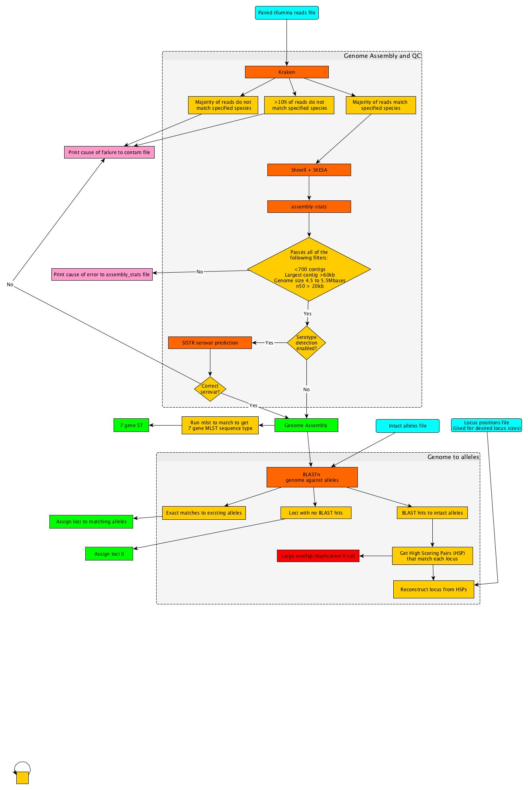

Analysis pipeline¶
Reads to Alleles¶
The reads to alleles pipeline has two components:
- Reads to genome assembly
- Genome assembly to alleles
Reads to Genome
This section of the pipeline can be run locally or as part of the full pipeline on the MGT server.
- When run locally it produces an strainID_alleles.fasta file which can be submitted to the MGT server.This approach saves upload time for large read sets and can speed the processing time in the database.
- When a user uploads raw paired end reads this section is run together with the rest of the pipeline.
Stages of the reads to genome pipline are displayed in the following flow diagram.
Genome assembly to alleles
Stages of the genome to allele pipeline are displayed in the following flow diagram.

WIP